1928—The New-Way Course in Millinery and Hat Design
Lesson 20—The Right Hat at the Right Time
The Right Hat at the Right Time
Now, suppose we discuss the matter of correct hats for various occasions. This is a question which will probably arise in your work on millinery, and it is best to solve it now.
Do you know, for instance, the correct type of hat for the afternoon at the theatre, for the evening at the hotel, for the Sunday at the beach? Do you know when to wear a tailored hat and when a dressy hat? Do you know the hat styles for the bride, the widow, the debutante?
Just as the wrong hat in the wrong season is unattractive, so is the wrong hat worn at the wrong time in bad taste. Yet, how many women wear chic little creations with dainty feather trimmings on the automobile excursion, when they should wear a plain little sports hat! And how many women make the mistake of appearing at the theatre or in a restaurant in evening attire with the wrong type of headdress!
In the Evening
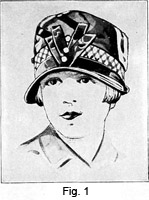When one is attired in formal evening dress it is bad form to wear a hat. The hair should be dressed high and one may wear a comb or hair ornament—but no hat. If the hair is bobbed, it should be attractively arranged. If one is in semi-evening dress, on the other hand, one may wear an attractive hat, quite dressy, to harmonize with the rest of the costume.
With tailored clothes worn in the evening, one may wear a veil, if veils are in style. Tailored clothes were at one time appropriate only for wear during the day, but now it is considered smart to wear them at all times, providing the occasion is appropriate. For instance, when one is traveling and spends the evening in a strange city, one may wear a tailored suit to the hotel, and with it a tailored hat.
For Morning Wear
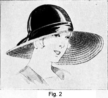For the person who is able to make her own hats, it is possible to have hats for every occasion, and at such a saving. It depends somewhat on the season as to just what kind of hat is appropriate for morning wear. Usually a sports hat of some type is becoming and the kind usually worn. It also depends on the occasion. If one is spending one's vacation at a summer place or resort a large hat would probably be most appropriate, especially if the weather is warm and the sun is shining brightly.
A small straw hat with a slightly turned brim would be very useful. It could be made of novelty braid and effectively trimmed according to the prevailing style. If bows are used, these may be applied; if quills are the vogue, a bright-colored one may be placed at a becoming angle.
For Afternoon Wear
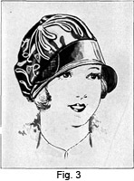In the afternoon, summer or winter, one usually wears a rather dressy hat, harmonizing as to style and color with the rest of the costume. If one attends a tea party or luncheon, one wears one's prettiest hat and gayest frock. A large hat is very appropriate, especially during the summer months.
If attending a matinee, one dresses according to the season, and wears a hat to go well with the costume. If Fashion decrees a large hat, and it looks well on you, by all means wear a large hat. If the close fitting hat is the approved kind, then this type should be chosen, providing, of course, that it looks well on you, and that it harmonizes with the rest of your costume.
For shopping a neat suit is most appropriate or a pretty, well-made coat and dress. The hat chosen is usually small, and whether of light or dark material depends on the taste of the wearer as well as on the word of style.
When traveling it is wise to dress plainly and as inconspicuously as possible. If bright colors are chosen great care should be taken that the matter is not overdone. The styles should not be extreme, but should be well chosen as to durability and occasion. A tweed coat is exceptionally nice for traveling, for it does not wrinkle as much as other materials. A felt hat is appropriate or a small hat of braid or satin. To complete the outfit, well-selected gloves and oxfords must be obtained.
Garden parties are sometimes held in the afternoon and sometimes in the evening. In the evening the hat is often omitted, though it is perfectly correct to wear one if desired. The correct thing to wear is a gay colored, light dress with a summery hat which is as large as possible without being unbecoming. Flower-trimmed hats are most appropriate for occasions of this kind.
Sports Hats
The 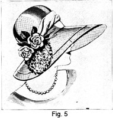sports hat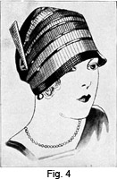 is worn a great deal and for many occasions. It is not confined to the summer months, as was at one time true. Felt hats are considered the true sports hat, though the ribbon and satin hats are also very popular. The felt hat, to be sure, is not as cool as other kinds, but nevertheless it does not lose its popularity even in the warmest weather. It seems each season this kind of hat becomes more popular and the styles more varied and attractive.
During the winter months, the brown and gray felts are worn a great deal, as well as the dark greens and, in fact, all dark shades. However, when summer comes it is almost impossible to find a color which is not represented by some style of felt hat. It is possible to get a felt hat to go with every type of sports clothes. The hats are made large, small and of various shapes. The trimmings are very scant, usually a band around the crown and a tailored bow. A quill is sometimes placed at an attractive angle, or a ribbon ornament.
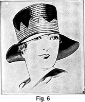The sports hat made of quilted satin is smart and attractive. The stitching may be of the same color as the hat or a harmonizing color may be selected. The material is quilted first in the regular way and then cut out and applied to the hat. These hats are especially nice to take along when traveling, for they may be packed and emerge looking none the worse for wear.
The ribbon hat, or ribbon and straw, is most attractive and may be made of ribbon about the same width as straw braid, and applied in much the same way. It will be necessary to gather the edges to make them stay flat, or if by chance the ribbon has a cord at the edge it may be gathered the same as the braid. This kind of hat is very simple to make and at the same time is most attractive.
The satin or taffeta sports hat is neat, but care must be taken that this kind of sports hat is not confused with the hat worn for more dressy occasions. The quilted hat is made of taffeta or satin and is really a true sports hat.
For the Elderly Woman
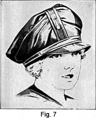Age has a charm of its own—a mellow charm that has all the beauty of a fading sunset. The elderly woman has a certain dignity and repose, a certain soft beauty, that the young girl in all her gay finery cannot hope to rival. With a bit of taste and a bit of style, one's grandmother can vie with the youngest among us.
Years ago it was commonly thought that the elderly woman must wear black and, in fact, only the dullest of colors. That notion has been erased, and now the elderly woman can wear the gayest sports hats if she desires, and she is not criticized for the choice. When a person stops to think a minute, it really is silly to think older people must wear dull colors. Why should they? A person is just as old as she feels, and if she longs for bright, well-chosen colors, why shouldn't she wear them?
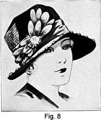To be sure, a black velvet hat looks well on some elderly women. A small black hat boasting nothing but the delicate tracery of a patterned black lace as a trimming is most flattering to the white-haired woman. Of course, if one is a bit sallow, the black must be relieved by a little color, either in the form of a flower or a touch of ribbon.
In fact, in this day, the elderly woman has a much larger choice than she had years ago. She may select many types of hat and the range of colors is unlimited, providing, of course, that she remembers that the color of her hair and her complexion plays an important part the same as with the younger person.
The elderly lady often prefers to wear a veil whether it is in style or out. If this is the case, it must be carefully chosen as to color and material. The kind of hat with which the veil is worn must be considered, for all hats do not look well with a veil.
To be sure, the lady along in years usually prefers a small hat with a very narrow brim. If she is short, she likes to select a hat with a large crown, or one which has the trimming arranged so as to make her look taller.
For evening wear, the elderly woman should follow the same rules as the younger person, that is, choose the type of hat most becoming to her. This hat is often made of silk material, and at just the right point to balance the symmetry of the face, she should have a bunch of lilacs or other small flowers in the summer, or a pretty jet ornament in the winter.
For the Young Girl
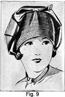Being a young girl has its advantages. One has the whole world of fashion to select from. There is the rose-petal hat, so pretty and so youthful, but no one but the young girl can wear it. The mushroom must have most certainly been created for youth, as well as the poke bonnet and the ever-present sailor.
However, one must not overstep the bounds of good taste merely because one is young. It is still necessary to consider harmony, color, personality and the occasion. One must not wear a sports hat to a reception or a real dressy creation on a shopping expedition. Of what avail is style and personality if one ignores the dictates of good form?
If she is a much-feted individual, she should know exactly what to wear to the party, the dance, the tea given in her honor. At the tea she wears a pretty frock of taffeta or some other silk with as wide and floppy a hat as her height will stand. Of course, this depends on the time of the year.
The close fitting hat is most becoming to the youthful face and is appropriate with the suit or coat. A hat of this type is worn for travel or for general utility wear.
The Bridal Veil
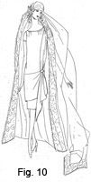It is interesting to trace the origin of the bridal veil to its source. According to the ancient marriage rites of the Anglo-Saxons a "care-cloth" (a square vestment) had to be held over the bride and groom before the marriage was considered binding. It was from this custom that the beautiful bridal veil of today has grown. Little does the bride realize, as she fondles the shimmering folds of her bridal gown and veil, that she is following customs that are age-old in their origin!
The bridal veil changes just the same as hats change. One year one type of veil is' worn, while another brings an entirely new kind. Sometimes the veil of the bride, which is usually of tulle, falls from the top of the head to the hem of her gown, and sometimes to the floor, forming a train. At other times it is considered correct to gather the veil into a charming flower-trimmed crown at the back of the head and allowing it to fall gracefully to the train of the dress.
The cap effect is often worn and may be arranged in different ways. Tulle still remains a favorite veil material. Lace is very beautiful—especially if it is old lace that has been a long time in the bride's family.
There are so many lovely imported applique veils available, at surprisingly reasonable prices, that if there is no heirloom lace veil to be worn, it becomes merely a matter of selection. The tulle veil is always pretty and has been adopted by many generations of brides in the past, and no doubt will be for many generations to come.
The accessories worn by the bride are mostly of her personal selection, or such as may have been received in gifts from her friends. Rosettes of lace or tulle with orange blossoms may decorate her high-heeled white satin slippers, and her white chiffon silk stockings may have a long lace insert at the front of the foot. Pearls are preferred to diamonds (or their imitations) for her jewelry. That, also, is a matter of personal choice. The long pearl earrings, so often in vogue, are distinctly suitable with the bridal finery.
It is customary to have orange blossoms or tiny lilies-of-the-valley entwined around the crown of the head, with a spray or two nestling in the folds of the veil. There are many attractive ways of arranging the bridal veil, but it is a question which depends largely upon prevailing style and upon individual taste.
With the going-away suit, or ensemble, one wears a smart little hat which harmonizes with the costume. If one is wise in the matter of trousseaus, one will most certainly include a chic little sports hat that can be worn with the smart sports silk dresses as well as with the sports suit.
Hats for the Bridesmaids
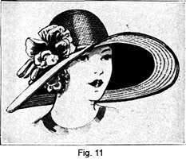Large floppy hats are usually chosen by the bridesmaids. They may be trimmed with velvet ribbon and flowers, to match the dresses worn by the bridesmaids. Horsehair braid in white or pastel shades make very pretty hats, especially when combined with lace or maline decorations, and perhaps one single large rose on the side, or the shaggy petal effect placed on the under side of the brim.
Sometimes wreaths made of feather flowers are put around the crown of the hat, or a wreath made of flowers resembling pink gladioli produce a charming effect. Applique designs are charming, especially when the design is made of lace dyed to match or harmonize with the dress and carefully sewed to the round crown and here and there on the wide brim of the hat.
Tinted lace, over maline, makes a beautiful transparent hat that many bridesmaids are happy to wear. The charming hat is finished with shaggy petals matching the sashes of their frocks. In some instances, hats of horsehair braid or maline are overlaid with white or tinted applique lace. The white hair hats are often wreathed with delicate green maiden-hair ferns, having a bunch of orchids or large roses on the right brim.
Mourning Hats
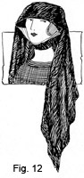Grief turns instinctively to the somber garments of mourning. There seems to be a certain measure of comfort in the subdued tones of black and white, in the unrelieved surface of one's dress. But good taste looks with disfavor upon long crepe veils and any other form of mourning that is pronounced, or ostentatious.
The mourning hat should be particularly simple. Any attempt at clever trimming or smart line is inappropriate—yet the hat should be taken to achieve a certain amount of individuality. For this reason handsome fabrics and becoming lines should be selected.
A woman in mourning does not wear jewelry aside from the wedding and engagement rings. Dull bar pins may be used whenever needed, and a brooch may be worn if it is not too ostentatious. Purse, gloves, etc., should be dull black. Handkerchiefs may have a black border or they may be pure white.
As for the rest of the mourning costume, dresses should be of black fabrics without a shiny finish. For instance, serge, tricotine, duvetyne, Canton crepe, pongee, chiffon and georgette are appropriate—but one should avoid velvets and fur trimmings. Bright linings are in bad taste, and while fur trimmings are not correct one may wear a fur piece or fur coat. Plain black seal or lynx are most appropriate, although other furs may be worn.
It is important to mention, at this point, that there are no iron-clad rules concerning mourning. No one is under compulsion to wear mourning unless one particularly wishes to do so. Indeed, to wear black when one does not genuinely mourn is a form of hypocrisy; while one may wear bright colors and yet be sincerely unhappy. It is entirely a matter of taste; but if one prefers to be conventional, black should be worn.
Materials for Mourning Hats
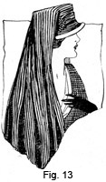It is safe to say that any material without a shiny, glossy surface may be used for mourning. Crepe is the best and most commonly used; dull taffeta is excellent, chiffon and georgette are all appropriate. For summer one may select dull braid straw, or even one of the blocked straw hats, dull in finish.
One should remember, in making a mourning hat, that the garment is a symbol of grief, and should not be attractive. If the fabric is of good quality, the lines of soft, graceful proportions and the trimming quiet and dignified in tone, no suggestion of clever style is necessary. For the elderly woman a small jet ornament is appropriate, but it is always best to confine one's self solely to the material and trim the hat simply with a shirring or ruffling of the same material from which the hat itself is made.
Sometimes a dull ornament on the head of the hat pin provides trimming to the mourning hat. Sometimes, in the case of very young girls, a black wreath is used. Frequently the material is so draped, in application, that it forms a most delightful trimming by itself. Not that the trimming must be delightful, of course, but the skillful milliner is always skillful—even in the matter of making mourning hats!
The mourning veil varies with each succeeding season. Sometimes it is long, sometimes very short. Sometimes it is of extremely heavy mesh; sometimes the mesh is fine and delicate. Very often the veil has a deep border, but recently the tendency has been to omit the border as a sign of ostentation. The only type of veil that rarely changes is the widow's veil, which is of crepe and falls almost to the knees.
The Period of Mourning
The length of the mourning period depends upon the tie which existed between the deceased and the bereaved. The longest period is two years—except in the case of an elderly woman whose husband has died and who never intends to take off black. The first year of mourning, under ordinary circumstances, is called "deep mourning," when one wears solid black. The second year is called "second mourning," during which time gray, lavender, purple and black-and-white may be worn. The change from black to colors should never be so abrupt as to be startling.
It is not good form for children to wear black. Upon the death of a parent they may wear white relieved by lavender for six months or so. But it is not appropriate for young children to wear solid black, to carry black-bordered handkerchiefs or to use mourning stationery. Delicate grays, lavenders and white are correct for the girl of fifteen or sixteen, if she feels she must wear mourning.
It is customary for the period of mourning to depend upon the strength of the bond which held the deceased and the mourner together. For instance, a woman will wear mourning for two years for her husband, while it is customary to wear mourning for a brother or cousin one year.
Women everywhere are realizing more the value of the correct hat for every occasion. It is so comforting to know just what to wear. It is also a great satisfaction to know how to make all types of hats. It is with the aid of our trusty friends, needles, pins and thread, combined with the willingness, determination and good judgment, that this may be accomplished.
LESSON 20
QUESTIONS
1. Should a hat be worn with formal evening dress?
2. What kind of hat is usually chosen to be worn in the morning?
3. What kind of hat is appropriate during the summer months?
4. What three materials are appropriate for sports hats?
5. Why are quilted hats appropriate to take when traveling?
6. The young girl may wear almost any style of hat, but she must not overstep the bounds of good taste. What are four things she must consider?
7. Name two materials especially suited for bridal veils.
8. What is usually used to decorate the bridal veil?
9. What kind of hat is most appropriate for bridesmaids?
10. What is the most commonly used material for mourning hats and veils?